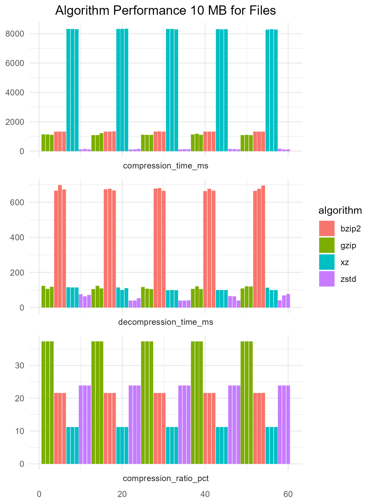
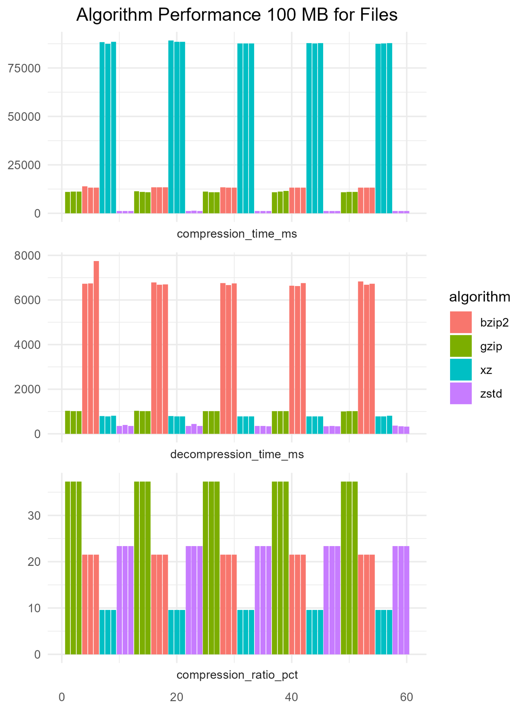
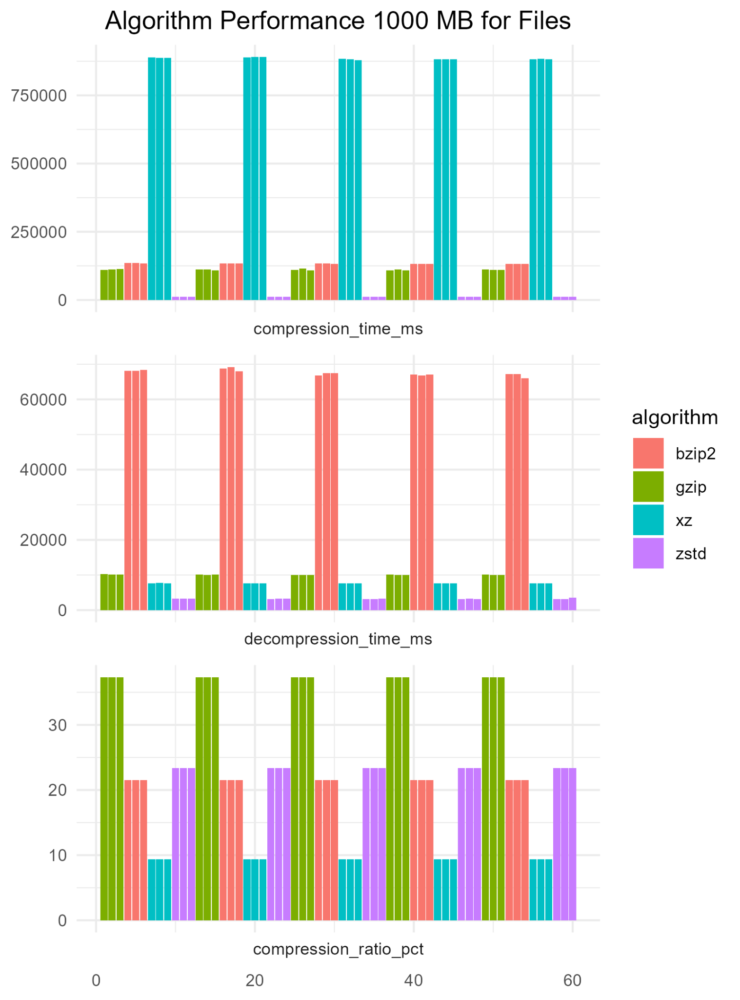
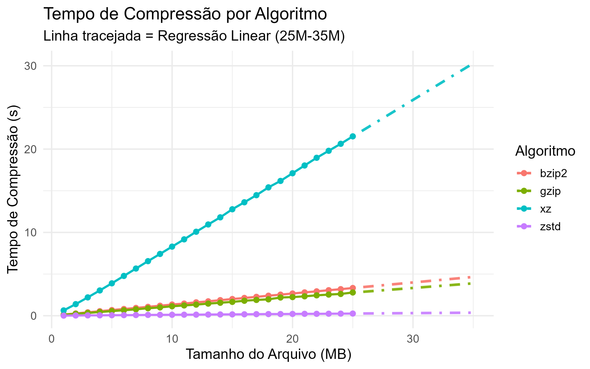
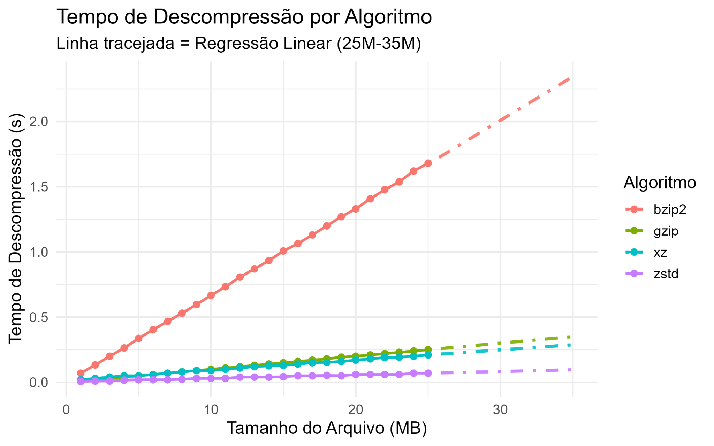
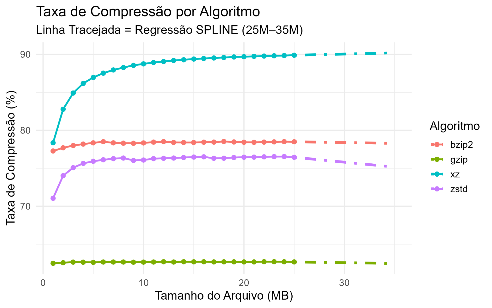

A compressão de arquivos é fundamental no desenvolvimento de software, administração de sistemas e ciência de dados. Com o crescimento exponencial do volume de dados, a escolha do algoritmo adequado torna-se crítica.
gzip (DEFLATE)
LZ77 + Huffman
Alta velocidade, compressão moderada
bzip2 (Burrows-Wheeler)
BWT + MTF + Huffman
Boa compressão, mais lento
xz (LZMA2)
Melhor taxa de compressão
Mais lento de todos
zstd (Zstandard)
Algoritmo moderno (Facebook)
Equilibra velocidade e compressão
Analisar comparativamente os trade-offs entre velocidade e eficiência de compressão para auxiliar na escolha do algoritmo mais adequado em diferentes cenários.
Arquivos de texto gerados com Cadeias de Markov (Kernighan & Pike, 1999), simulando dados textuais realistas.
| Aspecto | Fase 2 | Fase 3 |
|---|---|---|
| Tamanhos | 10, 100, 1000 MB | 1–25 MB |
| Arquivos | Gerados a cada teste | Pré-gerados |
| Cache | Limpo antes | Preload com cat |
| Repetições | 3 por config. | 3 por config. |



O procedimento de benchmark segue os seguintes passos para cada tamanho de arquivo:
sync && echo 3 > /proc/sys/vm/drop_caches
perf statperf stat


| Algoritmo | Comp. (ms) | Decomp. (ms) | Taxa (%) |
|---|---|---|---|
| gzip | 1448 ± 805 | 130 ± 73 | 62,65 ± 0,04 |
| bzip2 | 1734 ± 964 | 869 ± 487 | 78,32 ± 0,28 |
| xz | 10975 ± 6376 | 117 ± 57 | 88,12 ± 2,63 |
| zstd | 141 ± 74 | 39 ± 19 | 75,95 ± 1,15 |
Nota: Taxa (%) = 100 × (1 - comprimido/original).
Valores maiores indicam maior eficiência.
| Métrica | gzip | bzip2 | xz | zstd |
|---|---|---|---|---|
| Velocidade de Compressão | Bom | Regular | Ruim | Excelente |
| Velocidade de Descompressão | Bom | Ruim | Bom | Excelente |
| Taxa de Compressão | Regular | Bom | Excelente | Bom |
Conclusão: O algoritmo zstd destaca-se como a melhor escolha para a maioria dos cenários, oferecendo o melhor equilíbrio entre velocidade e eficiência de compressão.
Obrigado!
Perguntas?